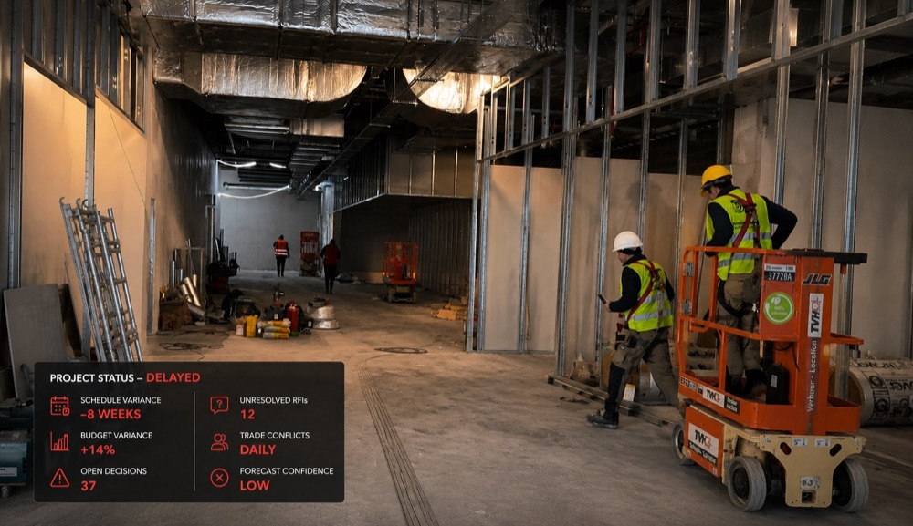
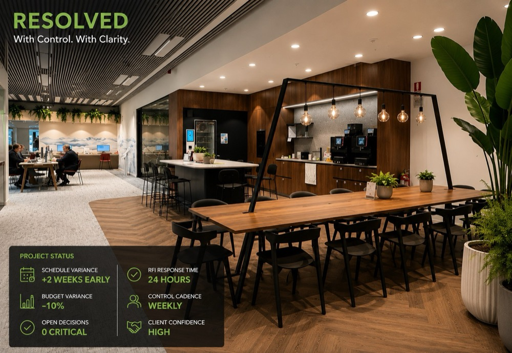

By the time it’s visible, it has already cost you. Find the leaks while they’re still recoverable.
Free Delivery Score: 15 Yes/No questions, about 4 minutes, instant result.
Margin leaks quietly: a scope change never priced, a vendor date that slipped, a decision left open. Each one is recoverable while it’s still a gap. Most are only found once they’ve hardened into a dispute.
Negotiations gone positional. Schedules slipping. Letters while the project bleeds.
You can see margin leaking through agreements that worked once. You can’t yet stop it.
Commercial set-ups built by someone else, signed before you arrived.
Ten business days on one live programme: control gap map, top-ten risk list and a 30/60/90-day recovery plan.
See the Reset →A named senior contract manager on a monthly fee, for contractors and specialist subcontractors.
Visit Ask ContracksWhy controls that look solid on paper collapse on site.
See the RESOLVE Special Report and articles

Illustrative: the only variable is the control around the work.
The same five controls apply at every stage. What changes is where you start.
If you can feel the programme slipping but can’t yet prove where, it probably is. The review call tells you either way.
No. The Reset is for owner-side teams. Contractors should look at Ask Contracks.
Fees are fixed and confirmed after the review call, because they depend on programme size and complexity.
Get your free Delivery Score. It takes about four minutes and shows your level on The Delivery Control Ladder™. There’s a full list of stages on the homepage.
Fifteen Yes/No questions. About four minutes. Your Delivery Score straight away.